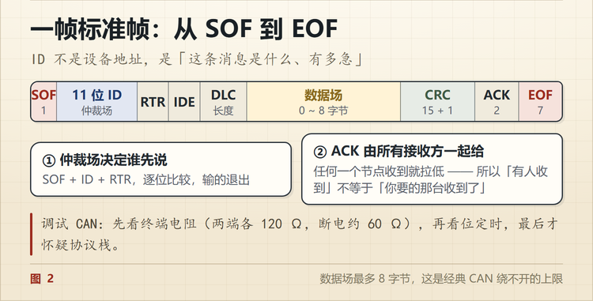

CAN 一帧从 SOF 到 EOF，每个字段在管什么
🐵 程序小猴 · 嵌入式通信避坑 Vol.08
ID 不是地址，是「这条消息是什么、有多急」。
第一次用 CAN 分析仪抓包，屏幕上跳出一行。
0x101 [8] 12 34 56 78 9A BC DE F0
后面还跟着一串缩写，SOF、RTR、IDE、DLC、CRC、ACK。能看出是 8 个字节的数据，其余全不认识。
后来把一帧拆开看，才知道每个字段都在管一件具体的事。
一、一帧分七段
标准数据帧从头到尾是这么排的。
| 段 | 位数 | 管什么 |
|---|---|---|
| SOF | 1 | 帧开始，一个显性位 |
| 仲裁场 | 12 | 11 位 ID + RTR |
| 控制场 | 6 | IDE + r0 + 4 位 DLC |
| 数据场 | 0~64 | 要传的内容，最多 8 字节 |
| CRC | 16 | 15 位校验 + 1 位界定符 |
| ACK | 2 | 应答槽 + 界定符 |
| EOF | 7 | 帧结束，7 个隐性位 |
一帧最短（无数据）44 位，最长（8 字节）108 位。这是不含位填充的长度。

二、SOF，一个位把总线叫醒
总线空闲的时候，CAN_H 和 CAN_L 电压一样，差分是 0，读出来是隐性（逻辑 1）。
要发帧，节点先把总线拉成显性（逻辑 0），保持一个位的时间。
就这一位，所有挂在总线上的节点都知道「有人要说话了」，开始对齐自己的位时序。
CAN 没有单独的时钟线，靠的就是这个下降沿对齐。所以 SOF 的边沿质量很重要，边沿太软，后面所有位都可能采错。
三、仲裁场，ID 加 RTR
这是 CAN 最有意思的一段。
11 位 ID 加上 1 位 RTR，一共 12 位。
先说 RTR。数据帧的 RTR 是显性，远程帧的 RTR 是隐性。远程帧就是「我要这个 ID 的数据，谁能发一下」，现在很少用，见到的基本都是数据帧。
重点是 ID 的含义。
CAN 的 ID 不是设备地址，是消息标识。
串口和 485 都是「这条消息发给谁」，先有地址再有内容。CAN 反过来，它说的是「这条消息是什么」。
0x101 可以固定表示电机转速，0x120 表示温度，0x201 表示控制命令。谁需要这些数据，自己用过滤器接收。
所以同一帧可以被多个节点同时收下，不需要发两遍。这也是 CAN 在车上好用的原因，一条总线上的转速信号，仪表、变速箱、ABS 都能听。
四、ID 越小越优先
仲裁是逐位比的。
显性 0 会覆盖隐性 1。两个节点同时发，一个发 0 一个发 1，总线呈现 0，发 1 的那个读回来发现不是自己发的，立刻退出，下一轮再试。
所以数值小的 ID 天然优先，因为它的高位更早出现 0。
这件事让 CAN ID 的分配本身就变成了优先级设计。 刹车、转向这些实时性要求高的报文，ID 要给得小；车内温度、车窗状态这些慢的，ID 可以大。
五、控制场，IDE 和 DLC
控制场 6 位，三个东西。
IDE 区分标准帧和扩展帧。标准帧是显性，扩展帧是隐性。
r0 是保留位，固定显性。
DLC 4 位，表示数据场有几个字节，取值 0 到 8。
要注意一点，DLC 写成 9 到 15 的时候，接收方按 8 字节处理。有些老器件这么干过，新项目别学。
六、数据场，最多 8 字节
这是经典 CAN 绕不开的上限。
8 字节够不够？看场景。
车内一个车速信号，2 个字节就够。但要是传一段诊断数据、一帧图像、一个固件分片，8 字节就很紧张。
这就是 CAN FD 出现的原因之一。FD 把数据场扩到 64 字节，还把数据段的速率提上去了。下一篇讲。
七、CRC 和 ACK
CRC 场 15 位校验加 1 位界定符。
发送方算好，接收方重算，不一致就报错，然后发错误帧把这一帧废掉，所有节点丢弃。
ACK 场两位，第一位是应答槽。
这里有个容易误解的地方。发送方在应答槽发的是隐性，任何一个收到正确帧的节点，都会在这个位把它拉成显性。
所以「有人收到」不等于「你要的那台收到了」。 总线上只要有一个节点应答，发送方就认为成功。想知道特定节点有没有收到，只能靠上层协议再加一层确认。
ACK 第二位是界定符，固定隐性。
八、EOF 和帧间隔
EOF 是 7 个连续的隐性位。
它有两个作用，标记这一帧结束，同时如果中间出现显性位，就说明有人违规，触发格式错误。
EOF 之后是 3 位帧间隔，给控制器留一点处理时间。
九、位填充，为什么有时候位数对不上
从 SOF 到 CRC 序列，连续出现 5 个相同电平，必须插入 1 个相反电平。
这是为了让接收方能持续从边沿恢复时钟。要是连着 6 个以上的相同位，没有边沿，时钟就没法对齐了。
代价是实际帧长会比理论值长。一帧 108 位的理论长度，最坏情况下要被填充到 130 位左右。
所以估算总线负载的时候，直接拿「8 字节 × 帧率 ÷ 波特率」算是错的，会低估 15% 以上。
十、标准帧和扩展帧混在一起
标准帧 11 位 ID，扩展帧 29 位。
两者混在一条总线上，前 11 位相同时，第 12 位就分出胜负了。
标准帧的第 12 位是 RTR，数据帧发显性；扩展帧的第 12 位是 SRR，固定是隐性。所以标准帧赢。
就算两边都是远程帧，第 12 位都是隐性，第 13 位的 IDE 也还是标准帧显性、扩展帧隐性，依然是标准帧赢。
结论是标准帧一定赢，跟后面的数值大小没关系。
这就是「ID 越小越优先」里的那个「通常」。它只在同类型帧内部成立，跨类型的时候，IDE 位先说话。
实际项目里通常让标准帧跑实时控制量、扩展帧跑诊断和长报文，就是这个道理。
十一、按这个顺序看一帧

| 顺序 | 看什么 | 说明 |
|---|---|---|
| ① | ID | 判断是哪个信号，数值小优先级高 |
| ② | DLC | 数据几个字节，和实际长度对不上就是错的 |
| ③ | 数据 | 字节序是大端还是小端，看协议定义 |
| ④ | 周期 | 固定周期说明是正常广播，忽快忽慢要查 |
| ⑤ | 错误计数 | TEC 和 REC 涨了，说明物理层有问题 |
| ⑥ | 总线负载 | 超过 50% 就要留意最坏时延 |
第 ⑤ 步最容易忽略。很多「CAN 收不到」的问题，抓包看不出异常，一看 TEC 已经涨到 200 多，那是终端电阻或者接线的问题，不是协议的事。

CAN 真正厉害的不是差分传输，而是它把多节点竞争、优先级仲裁、错误检测、故障隔离，全都做进了协议里。
你手上项目的 CAN ID 是怎么分配的？评论区说说。
📌 这是「嵌入式通信避坑」第 8 篇，全系列 14 篇，从串口一路讲到 CAN 和无线选型。
💬 觉得有用就点个在看，下一篇讲 CAN 收不到数据的时候，先看 TEC 和 REC 这两个错误计数器。